Tiny Worlds in a Frame
Some of Stephanie's most beloved pieces are her shadow boxes — dimensional scenes built inside a frame. Some are entire miniature towns alive with detail; others are smaller, spontaneous scenes. Each one is completely one of a kind.
Miniature Towns & Villages
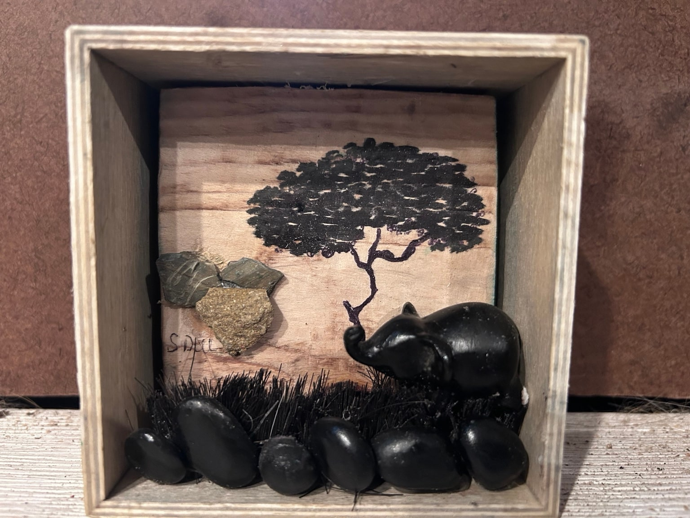
Sold for $100
A dark elephant figurine stands beneath a spreading tree image, with smooth dark stones lining the base of the wooden box.
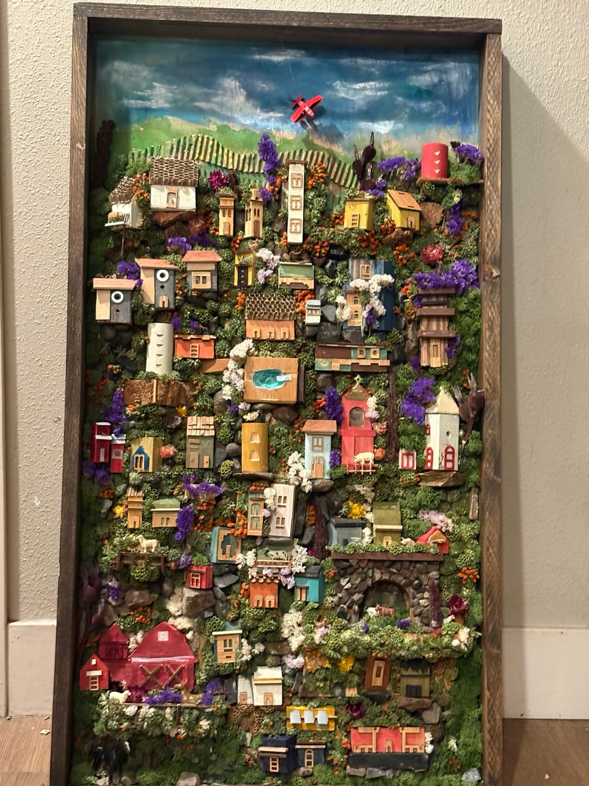
22 × 40 in
Materials: Cardboard, wood, metal, rocks, plants, tiger lilies, plastic, watercolor, oil pastel, acrylic, glue, cellophane, and markers
Rows of colorful miniature buildings, flowers and pathways fill a tall village scene beneath a small red airplane.
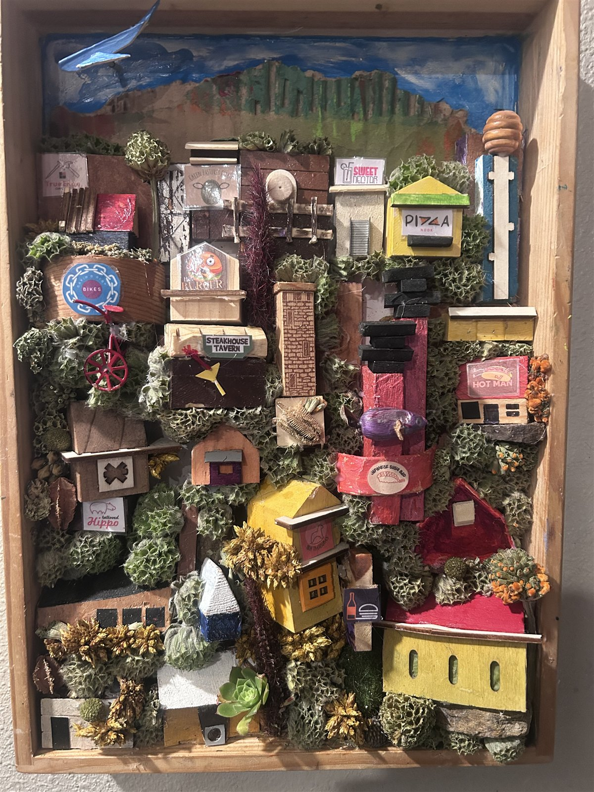
12 × 20 in
Materials: Cardboard, wood, metal, rocks, plants, tiger lilies, plastic, watercolor, oil pastel, acrylic, glue, cellophane, and markers
Sold for $550 — full miniature town
Miniature buildings and colorful storefront signs crowd a narrow town scene, with greenery tucked between the structures.
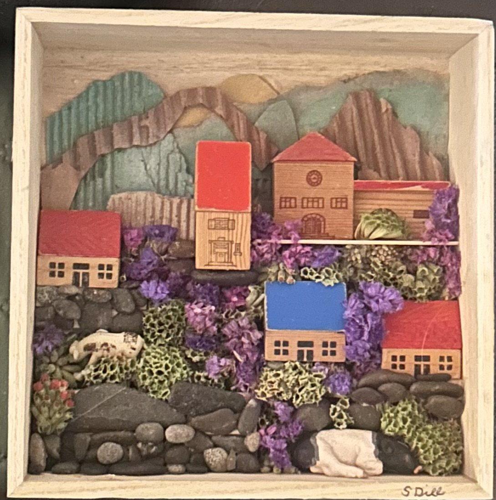
Miniature houses sit among stones and purple flowers beneath layered mountain silhouettes. A pale wooden frame contains the village scene.
Size: 8 × 8 in
Materials: Cardboard, wood, metal, rocks, plants, tiger lilies, plastic, watercolor, oil pastel, acrylic, glue, cellophane, and markers
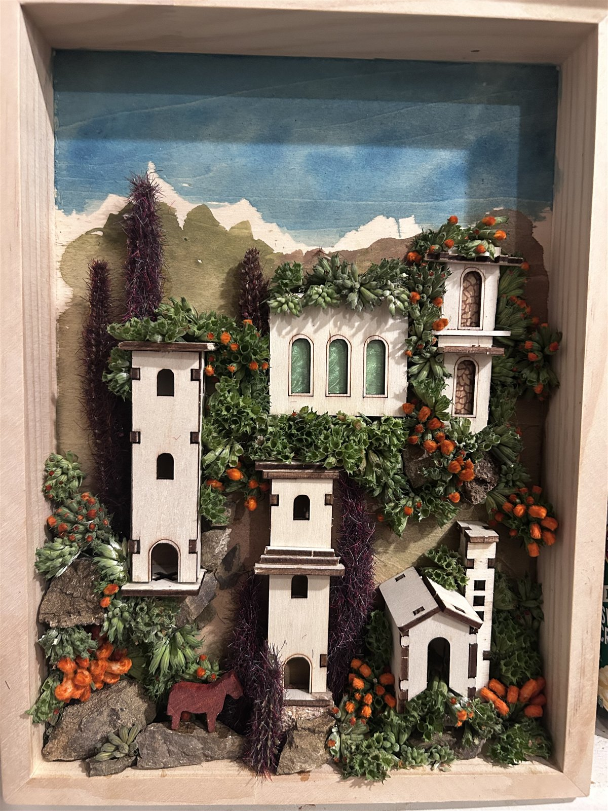
Size: 12 × 18 in
Materials: Cardboard, wood, metal, rocks, plants, tiger lilies, plastic, watercolor, oil pastel, acrylic, glue, cellophane, and markers
Pale miniature buildings rise among green foliage and small orange flowers. Blue sky and layered hills form the backdrop inside a wooden frame.
Sold for $400 — work in progress
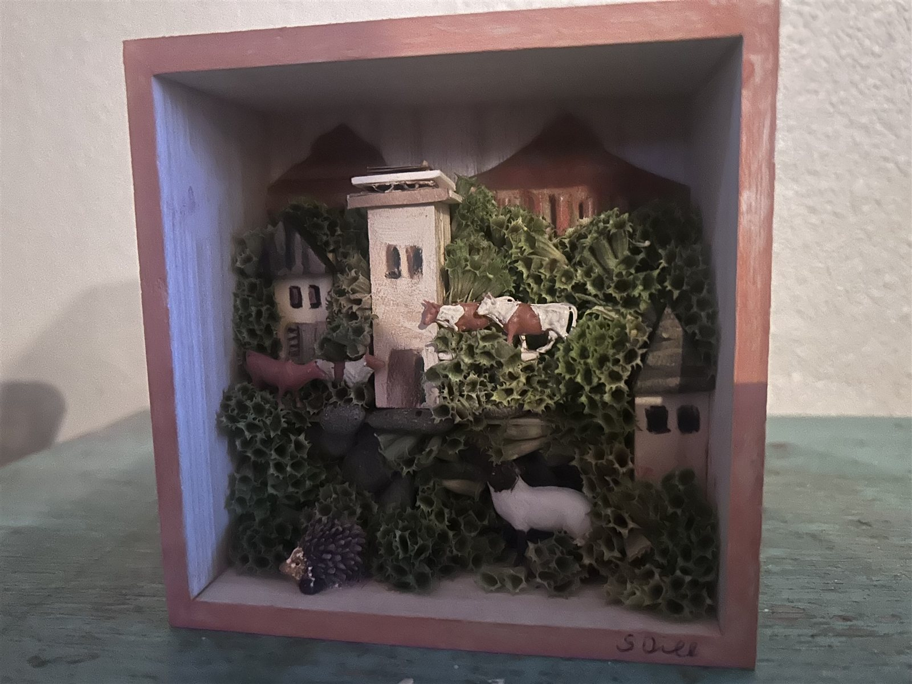
Miniature buildings and farm animals nestle among green foliage and dark stones. Mountain silhouettes rise behind the scene inside a warm-toned wooden frame.
Materials: Cardboard, wood, metal, rocks, plants, tiger lilies, plastic, watercolor, oil pastel, acrylic, glue, cellophane, and markers
Sold for $200 — signed S. Dill
Scenes & Stories
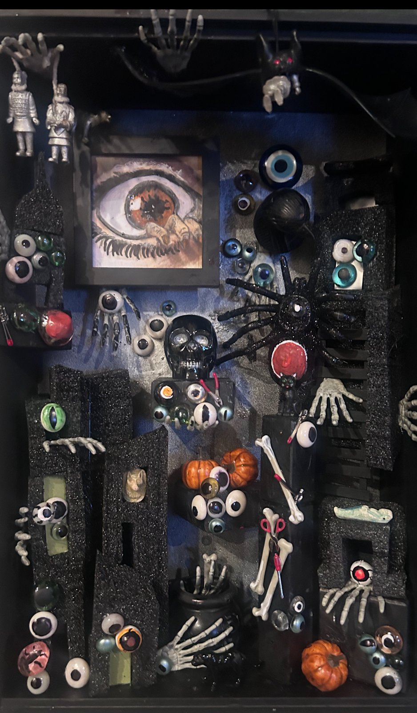
Eyes, skeletal hands, bones and orange pumpkins fill a dark shadow box around a framed eye image. A large black spider stretches across the blue-and-black scene.
Size: Approximately 16 × 24 in
Materials: Pens, plastic, acrylic paint, markers, glue, Styrofoam, rubber spray paint, glass, laminate, and wood
Sold for $350 — assemblage box
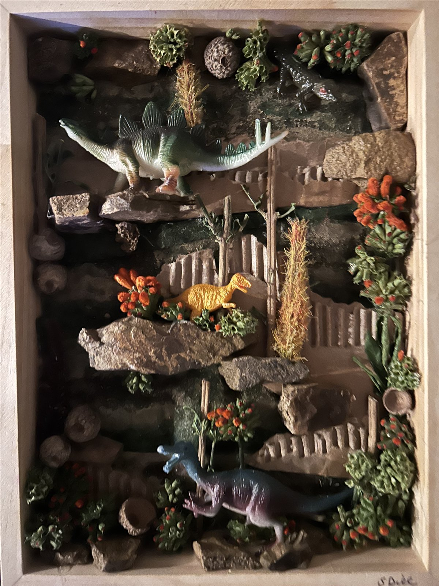
Dinosaur figures stand on layered rock ledges among green plants and orange flowers. Corrugated cardboard forms ridges behind the scene inside a pale wooden frame.
Size: 12 × 6 × 18 in
Materials: Plastic, rock, cardboard, glue, acorns, tiger lilies, and plants
Sold for $200
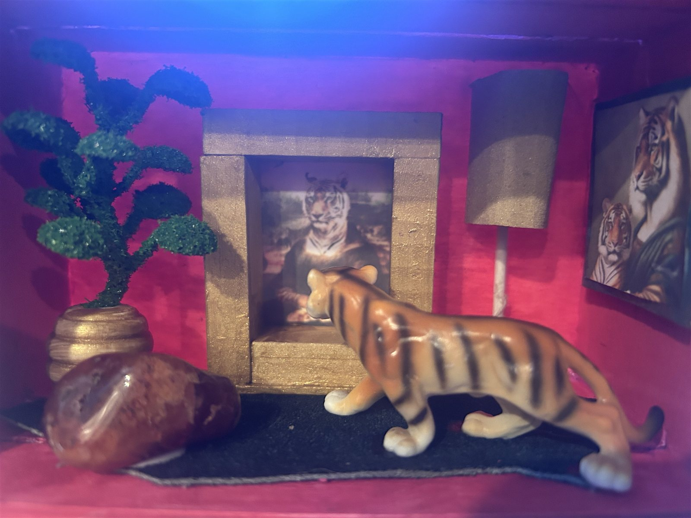
Size: 6 × 3 in
A tiger figurine faces a gold-framed tiger portrait in a red miniature room. A potted tree, floor lamp and another tiger picture complete the scene.
Materials: Wood, plastic, acrylic paint, rock, rubber, suede, watercolor, laminate, and cardboard
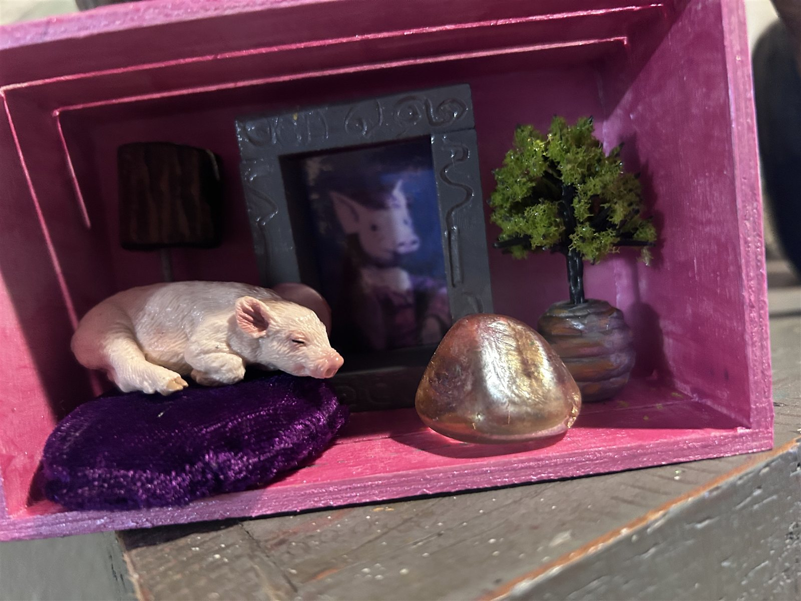
A sleeping piglet rests on a purple cushion in a pink miniature room. A framed pig portrait, a small lamp, a potted tree and a rounded stone surround it.
Materials: Wood, plastic, acrylic paint, rock, rubber, suede, watercolor, laminate, and cardboard
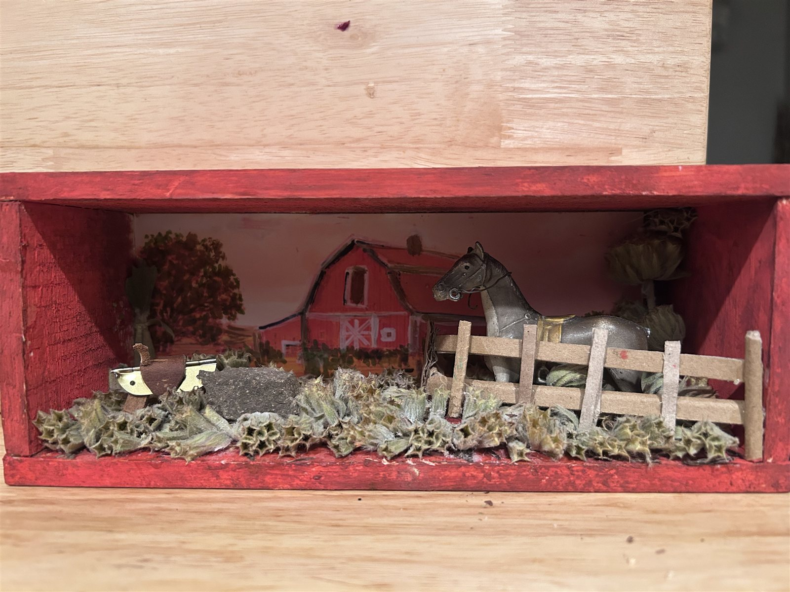
A horse stands behind a miniature fence with a red barn pictured in the background. Dried plants and stones cover the foreground inside a red wooden frame.
Size: 3 × 8 in
Materials: Tiger lilies, wood, acrylic, watercolor pens, and porcelain rocks
Sold for $150
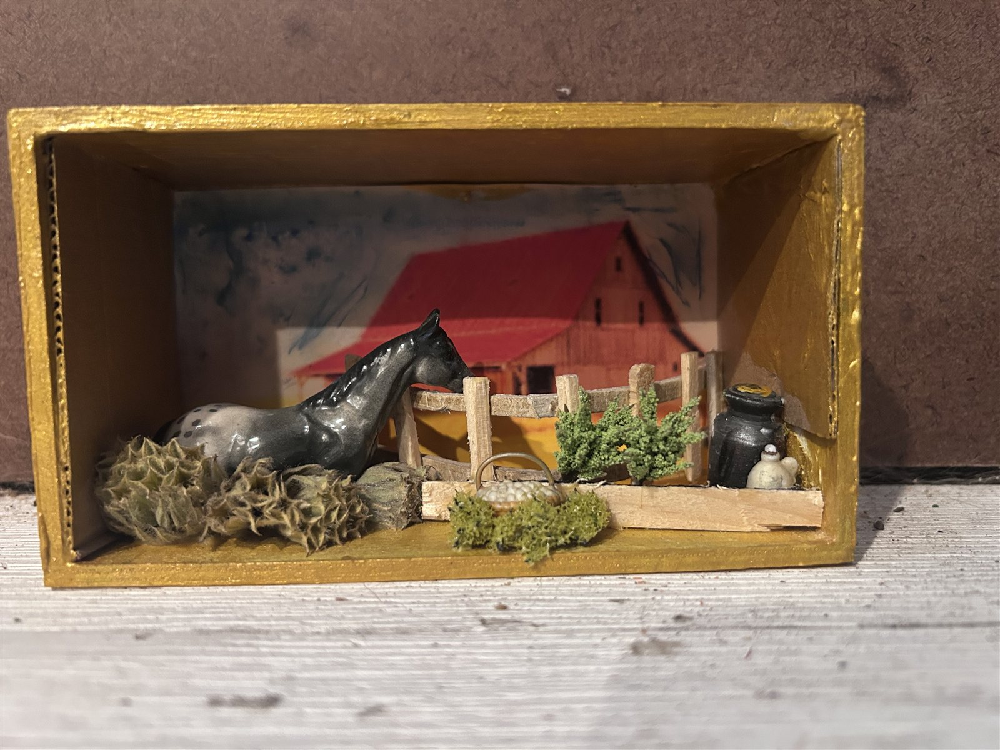
A spotted horse stands beside a miniature fence in front of a red-roofed barn picture. Dried plants, green foliage and small vessels fill the scene inside a gold-colored frame.
Size: 3 × 6 in
Materials: Tiger lilies, wood, acrylic, watercolor pens, and porcelain rocks
Sold for $100
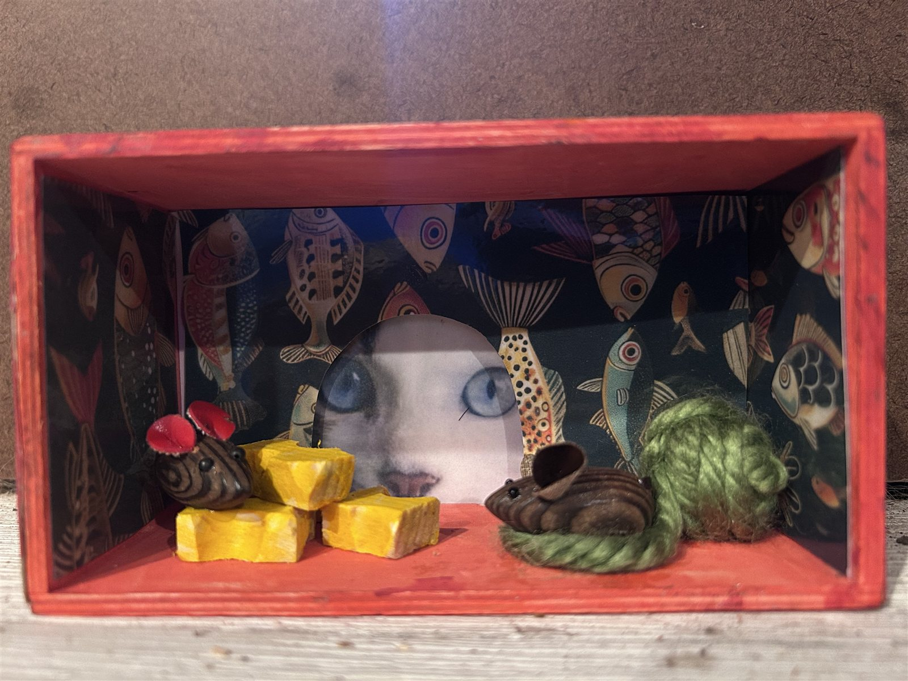
Two miniature mice sit beside yellow cheese pieces and green yarn in a red shadow box. A cat peers through an opening in the fish-patterned backdrop.
Size: 3 × 6 in
Materials: Yarn, wood, acrylic, laminate, leather, and watercolor
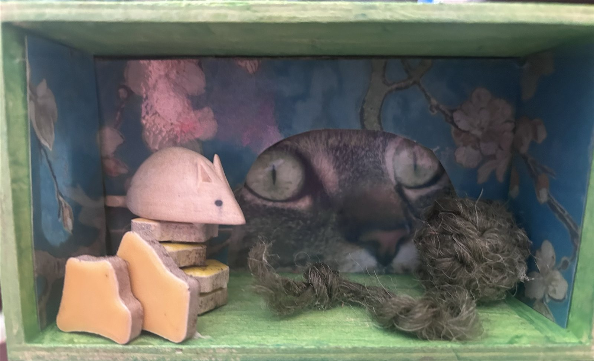
A cat's face peers from a blue patterned backdrop behind a pink mouse, cheese pieces and a loose coil of yarn inside a green frame.
Size: 3 × 6 in
Materials: Yarn, wood, acrylic, laminate, leather, and watercolor
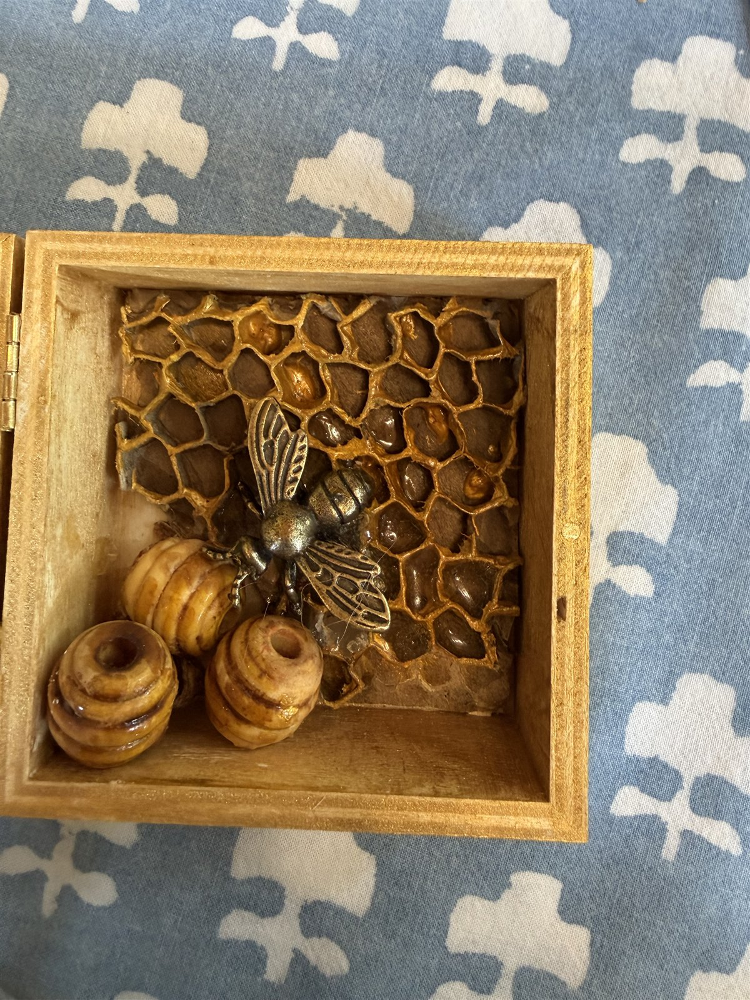
A large bee rests against an open honeycomb pattern above rounded hive forms inside a gold-colored shadow box.
Size: 3 × 2.5 × 2.5 in
Materials: Cardboard, acrylic paint, brass, and wood
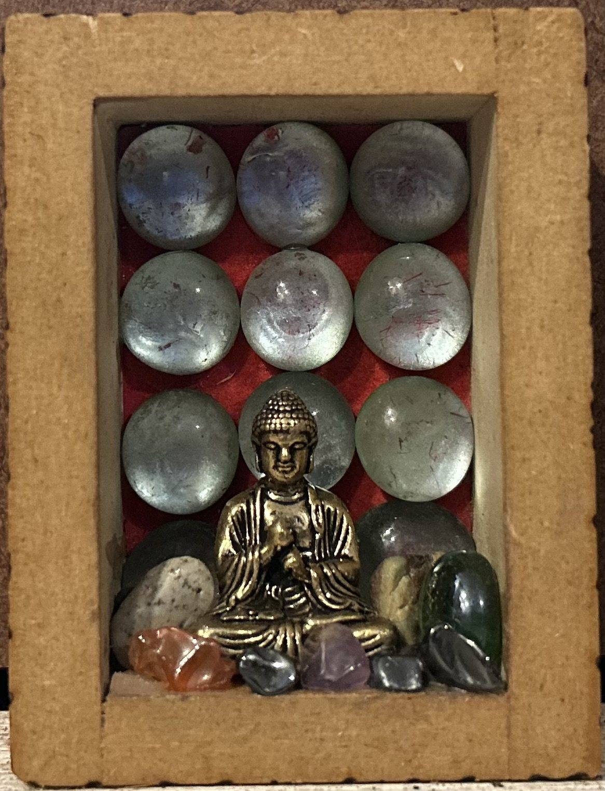
A small seated Buddha figure rests before rows of round translucent stones, with polished stones arranged at its feet.
Size: 2 × 2.5 in
Materials: Wood, glass, brass, and different types of rocks/gems
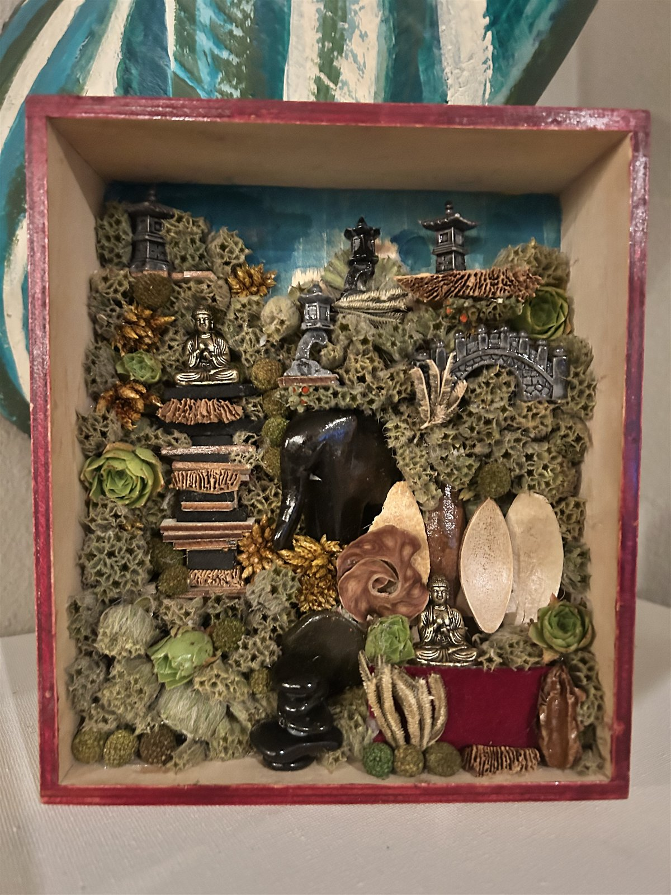
A dark elephant, miniature towers and layered plant forms fill a garden scene framed in pink and cream.
Size: 6 × 8 in
Materials: Bark, velvet, tiger lilies, succulents, plastic, watercolor, acrylic, rocks, wood, brass
Dream up your own tiny world
Custom shadow boxes can be commissioned — a favorite place, a memory, a story in miniature.
Commission a Shadow Box